“The case study consists of analysis of migration patterns of three birds”
toc: false
branch: master
badges: true
comments: true
categories: [case-study, notebook, R]
image: images/vignette/gapminder.png
hide: false
search_exclude: true
Abstract
The objective of this case study is to understand the change in World Health and Economics using Data Visualization, EDA, and Summarization. In this study two main questions, Is it a fair characterization of today’s world to say that it is divided into a Westorn Rich Nations (Europian Countries, USA et cetera), and Developing Countries (Asia, Africa et cetera)? Has the Income Inequality worsened during the last 40 years? The study involves data from Gapminder Foundation about trends in world health and economics. Study emphasizes the use of data visualization to better understand the trends and insights. This study is purely based on the Gapminder TED talks New Insights on poverty
'data.frame': 10545 obs. of 9 variables:
$ country : Factor w/ 185 levels "Albania","Algeria",..: 1 2 3 4 5 6 7 8 9 10 ...
$ year : int 1960 1960 1960 1960 1960 1960 1960 1960 1960 1960 ...
$ infant_mortality: num 115.4 148.2 208 NA 59.9 ...
$ life_expectancy : num 62.9 47.5 36 63 65.4 ...
$ fertility : num 6.19 7.65 7.32 4.43 3.11 4.55 4.82 3.45 2.7 5.57 ...
$ population : num 1636054 11124892 5270844 54681 20619075 ...
$ gdp : num NA 1.38e+10 NA NA 1.08e+11 ...
$ continent : Factor w/ 5 levels "Africa","Americas",..: 4 1 1 2 2 3 2 5 4 3 ...
$ region : Factor w/ 22 levels "Australia and New Zealand",..: 19 11 10 2 15 21 2 1 22 21 ...
Data consists of 10545 Observations and 9 Variables, it consists of varibles like country, region, health outcomes (life_expectancy, fertility), economic aspects (gdp), Add gdp_cp var i.e. gdp per capita which represents the wealth of a country
# Add gdp_cp var i.e. gdp per capita which represents wealth of a countrygapminder <- gapminder %>%mutate(gdp_pc = gdp / population, dollars_per_day = gdp_pc/365)head(gapminder)
country
year
infant_mortality
life_expectancy
fertility
population
gdp
continent
region
gdp_pc
dollars_per_day
Albania
1960
115.40
62.87
6.19
1636054
NA
Europe
Southern Europe
NA
NA
Algeria
1960
148.20
47.50
7.65
11124892
13828152297
Africa
Northern Africa
1242.992
3.405458
Angola
1960
208.00
35.98
7.32
5270844
NA
Africa
Middle Africa
NA
NA
Antigua and Barbuda
1960
NA
62.97
4.43
54681
NA
Americas
Caribbean
NA
NA
Argentina
1960
59.87
65.39
3.11
20619075
108322326649
Americas
South America
5253.501
14.393153
Armenia
1960
NA
66.86
4.55
1867396
NA
Asia
Western Asia
NA
NA
Analysis
Infant Mortality
Getting started with testing our knowledge regarding differences in infant mortality across differnt countries, for each of the pairs of countries given below, Which country do you think had the highest child mortality rate in 2015? and Which pairs do you think are the most similar?
Country1
Country2
Sri Lanka
Turkey
Poland
South Korea
Malaysia
Russia
Pakistan
Vietnam
Thialand
South Africa
It is commonly percieved that the non-europian countries like Sri Lanka, South Korea have higher mortality rates than their Europian counterparts. Also the developing countries like Pakistan are considered to have high mortality rates. Lets take a look at the data to see whether it is just a superstition or a fact.
countries <-c("Sri Lanka","Turkey","Poland","South Korea","Malaysia","Russia","Pakistan","Vietnam","Thailand","South Africa")mortality <-data.frame()for (i inseq(1,10,2)) { mortality1 <- gapminder %>%filter(year ==2015& country %in% countries[c(i,i+1)]) %>%select(country, infant_mortality) mortality1 <-cbind(mortality1[1,], mortality1[2,]) mortality1 <- mortality1[-2,] mortality <-rbind.data.frame(mortality,mortality1)}mortality
country
infant_mortality
country
infant_mortality
Sri Lanka
8.4
Turkey
11.6
South Korea
2.9
Poland
4.5
Malaysia
6.0
Russia
8.2
Pakistan
65.8
Vietnam
17.3
South Africa
33.6
Thailand
10.5
We see that the European countries on this list have higher child mortality rates: Poland has a higher rate than South Korea, and Russia has a higher rate than Malaysia. We also see that Pakistan has a much higher rate than Vietnam, and South Africa has a much higher rate than Thailand. The reason for this stems from the preconceived notion that the world is divided into two groups: the western world (Western Europe and North America), characterized by long life spans and small families, versus the developing world (Africa, Asia, and Latin America) characterized by short life spans and large families.
Life Expectancy, Fertility
scatterplot of life expectancy versus fertility rates (average number of children per woman) 50 years ago
#basic scatterplot of life expectancy versus fertility in year 1962ds_theme_set()gapminder %>%filter(year ==1962) %>%ggplot(aes(fertility, life_expectancy)) +geom_point(size =1) +ylab("Life Expectancy") +xlab("Fertility") +ggtitle("Life Expectancy vs Fertility (1962)") +theme_gdocs()
Most points fall into two distinct categories: Life expectancy around 70 years and 3 or fewer children per family, and Life expectancy lower than 65 years and more than 5 children per family.
To confirm that indeed these countries are from the regions we expect, we can use color to represent continent.
# Add color based on continentgapminder %>%filter(year ==1962) %>%ggplot(aes(fertility, life_expectancy, color = continent)) +geom_point() +labs(title ="Life Expectancy vs Fertility",subtitle ="1962",caption ="Data from Gapminder foundation study",x ="Fertility",y ="Life Expectancy",color ="Continent") +theme_gdocs()
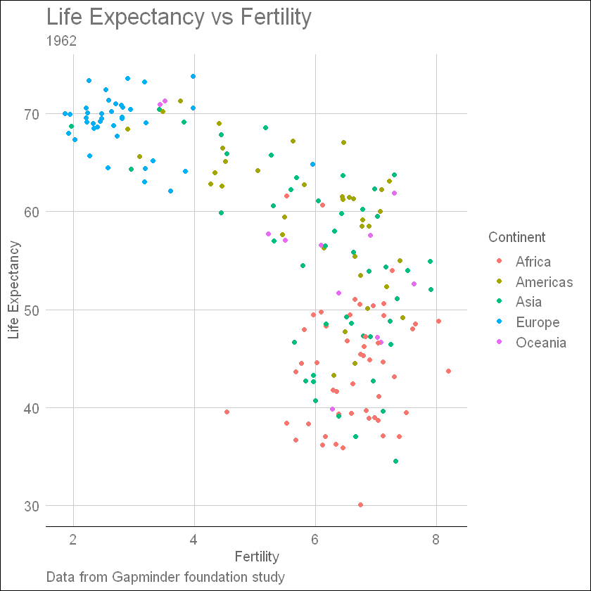
In 1962, “the West versus developing world” view was grounded in some reality. Is this still the case 50 years later?
Changes over time
Facet life expectancy vs fertility by continent and year to see how it changed from 1962 to 2012 for different continents using side-by-side plots
gapminder %>%filter(year %in%c(1962, 2012)) %>%ggplot(aes(fertility, life_expectancy, color = continent)) +geom_point() +facet_grid(continent ~ year) +labs(title ="Life Expectancy vs Fertility",subtitle ="Coparison between 1962 and 2012",caption ="Data from Gapminder foundation study",x ="Fertility",y ="Life Expectancy",color ="Continent") +theme_gdocs()
Except for countries in Africa continent almost all of the countries had significant increase in life expectancy and reduced fertility and Europian countries has the most significant increase of all thus **It’s quite clear from the plot, notion that Europian and American countries have a higher life-expectancy is somewhat correct
Faceting by year 1962 and 2012 shows, though all of the countries had a increase in life-expectancy, European and American countries had the highest life-expectancy. This plot clearly shows that the majority of countries have moved from the developing world cluster to the western world one. In 2012, the western versus developing world view no longer makes sense. This is particularly clear when comparing Europe to Asia, the latter of which includes several countries that have made great improvements.
Facet by year, plots wrapped onto multiple rows to see changes over the years in life-expectancy to explore how this transformation happened through the years, we can make the plot for several years. This plot clearly shows how most Asian countries have improved at a much faster rate than European ones.
gapminder %>%filter(year %in%c(1962, 1980, 1990, 2000, 2012), continent %in%c("Asia", "Europe")) %>%ggplot(aes(fertility, life_expectancy, color = continent)) +geom_point() +facet_wrap(~year) +labs(title ="Life Expectancy vs Fertility",subtitle ="How the old superstition changed over time",caption ="Data from Gapminder foundation study",x ="Fertility",y ="Life Expectancy",color ="Continent") +theme_gdocs()
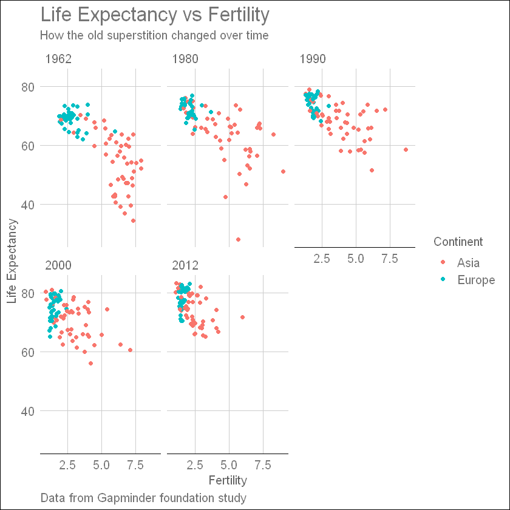
gapminder %>%filter(year %in%c(1962, 1980, 1990, 2000, 2012), continent %in%c("Asia", "Europe")) %>%ggplot(aes(fertility, life_expectancy, color = continent)) +geom_point() +facet_wrap(~year, scales ="free") +labs(title ="Life Expectancy vs Fertility",subtitle ="Trend will be unobservable if the scale is free",caption ="Take a closer look at the scales",x ="Fertility",y ="Life Expectancy",color ="Continent") +theme_gdocs()
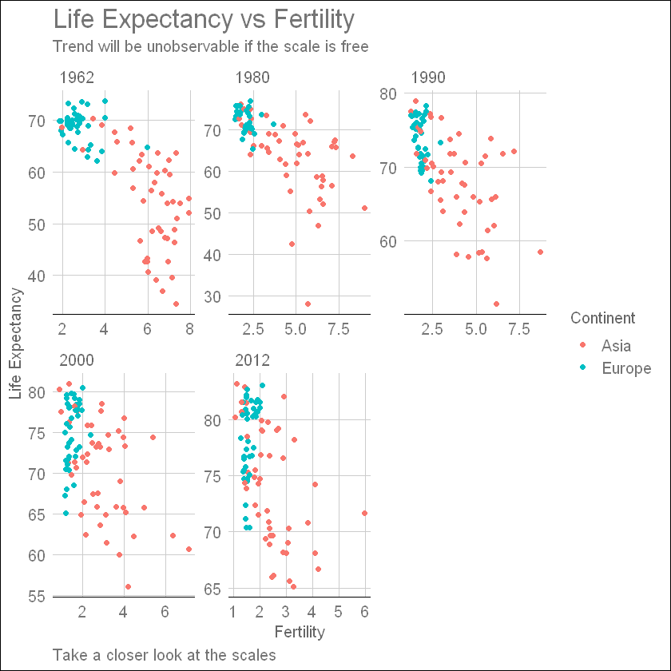
gapminder %>%filter(year %in%c(1962, 2012)) %>%ggplot(aes(fertility, life_expectancy, color = continent)) +geom_point() +facet_grid(continent ~ year) +labs(title ="Life Expectancy vs Fertility",subtitle ="Coparison between 1962 and 2012",caption ="Data from Gapminder foundation study",x ="Fertility",y ="Life Expectancy",color ="Continent") +theme_gdocs()
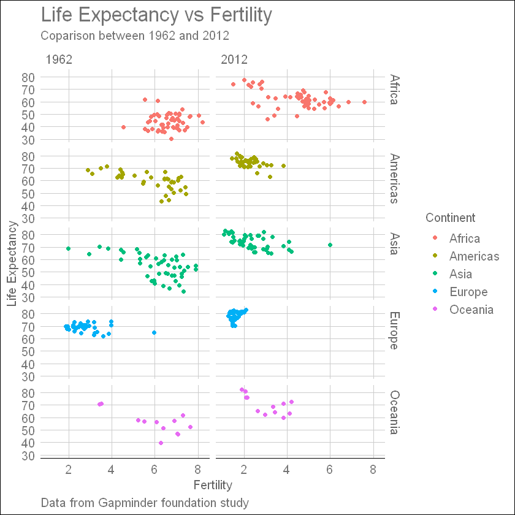
Time Series Analysis
The visualizations above effectively illustrate that data no longer supports the western versus developing world view. Once we see these plots, new questions emerge. For example, which countries are improving more and which ones less? Was the improvement constant during the last 50 years or was it more accelerated during certain periods? For a closer look that may help answer these questions, we are going to use time series plots.
# scatterplot of US fertility by yeargapminder %>%filter(country =="United States", !is.na(fertility)) %>%ggplot(aes(year, fertility)) +geom_point() +theme_gdocs()
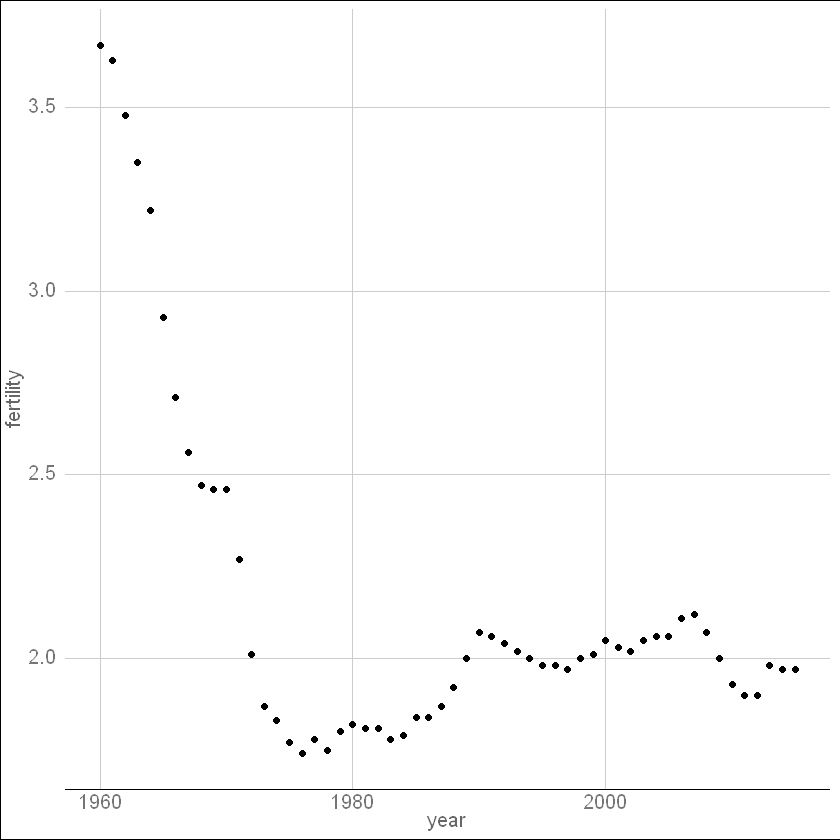
We see that the trend is not linear at all. Instead there is sharp drop during the 1960s and 1970s to below 2. Then the trend comes back to 2 and stabilizes during the 1990s. When the points are regularly and densely spaced, as they are here, we create curves by joining the points with lines, to convey that these data are from a single series, here a country.
Line plot - US fertility
# line plot of US fertility by yeargapminder %>%filter(country =="United States", !is.na(fertility)) %>%ggplot(aes(year, fertility)) +geom_line() +theme_gdocs()
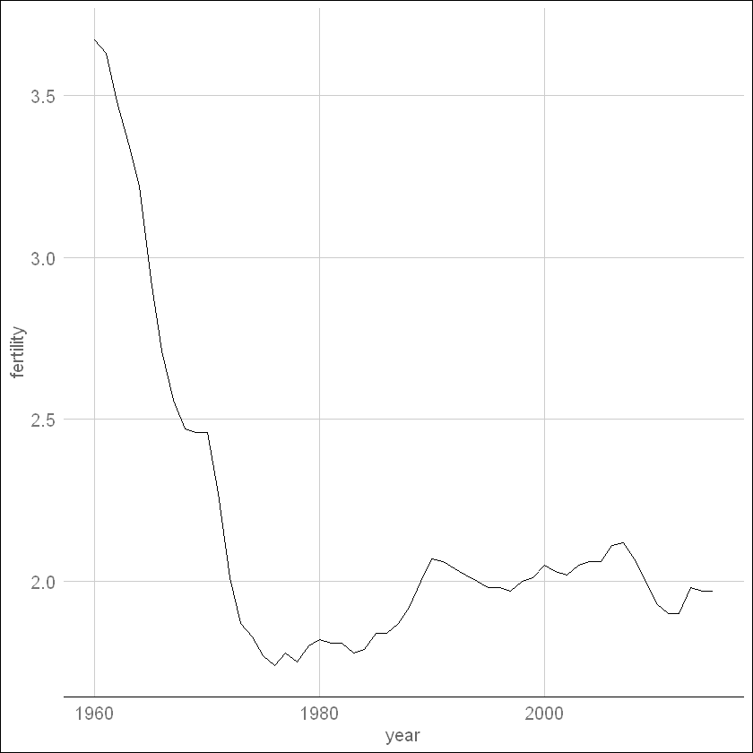
Line plot - Korea and Germany
This is particularly helpful when we look at two countries. If we subset the data to include two countries, one from Europe and one from Asia.
countries <-c("South Korea", "Germany")gapminder %>%filter(country %in% countries &!is.na(fertility)) %>%ggplot(aes(year, fertility, group = country)) +geom_line() +theme_gdocs()
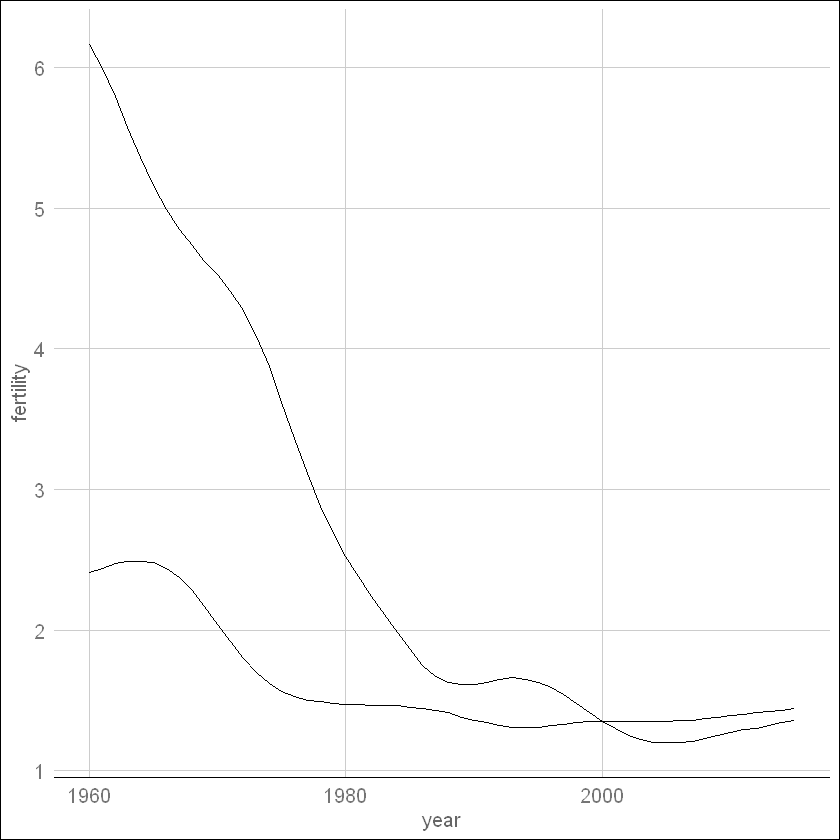
The plot clearly shows how South Korea’s fertility rate dropped drastically during the 1960s and 1970s, and by 1990 had a similar rate to that of Germany.
labels <-data.frame(country = countries, x =c(1986, 1975), y =c(2.5,2.0))gapminder %>%filter(country %in% countries &!is.na(fertility)) %>%ggplot(aes(year, fertility, col = country)) +geom_text(data = labels, aes(x, y, label = country), size =4) +theme(legend.position ="none") +geom_line()
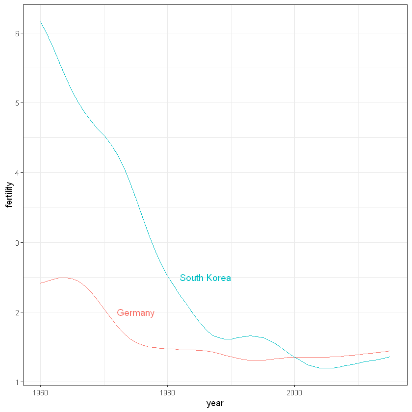
# life expectancy time series - lines colored by country and labeled, no legendlabels <-data.frame(country = countries, x =c(1975, 1965), y =c(60, 72))gapminder %>%filter(country %in% countries) %>%ggplot(aes(year, life_expectancy, col = country)) +geom_line() +geom_text(data = labels, aes(x, y, label = country), size =5) +theme(legend.position ="none") +ylab("Life Expectancy") +xlab("Fertility")
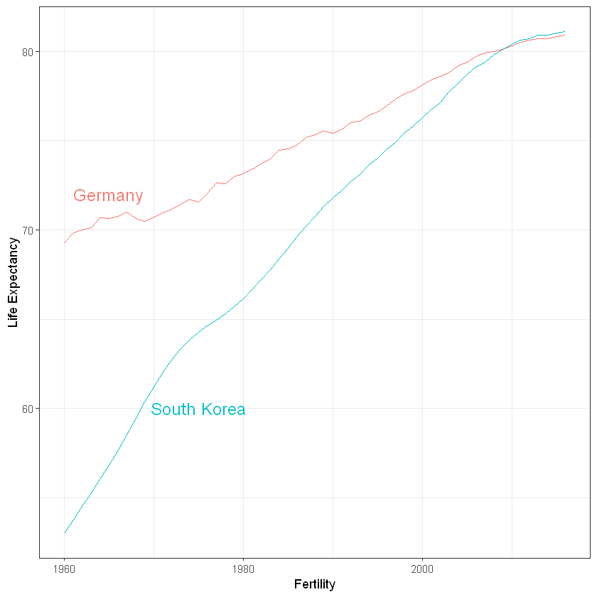
countries <-c("Germany", "United States")gapminder %>%filter(country %in% countries &!is.na(gdp_pc)) %>%ggplot(aes(gdp_pc, life_expectancy, col = country)) +geom_point() +xlab("Per Capita GDP") +ylab("Life Expectancy")
# Add dollars_per_day or Income per day Variable/Column to the datagapminder <- gapminder %>%mutate(dollars_per_day = gdp/population/365)# Number of regions length(levels(gapminder$region))# Plot Boxplotgapminder %>%filter(year == past_year &!is.na(gdp)) %>%ggplot(aes(region, dollars_per_day)) +geom_boxplot() +scale_y_continuous(trans ="log2") +theme(axis.text.x =element_text(angle =90, hjust =1)) +ylab("Income (Dollars/Day)") +xlab("Region")
22
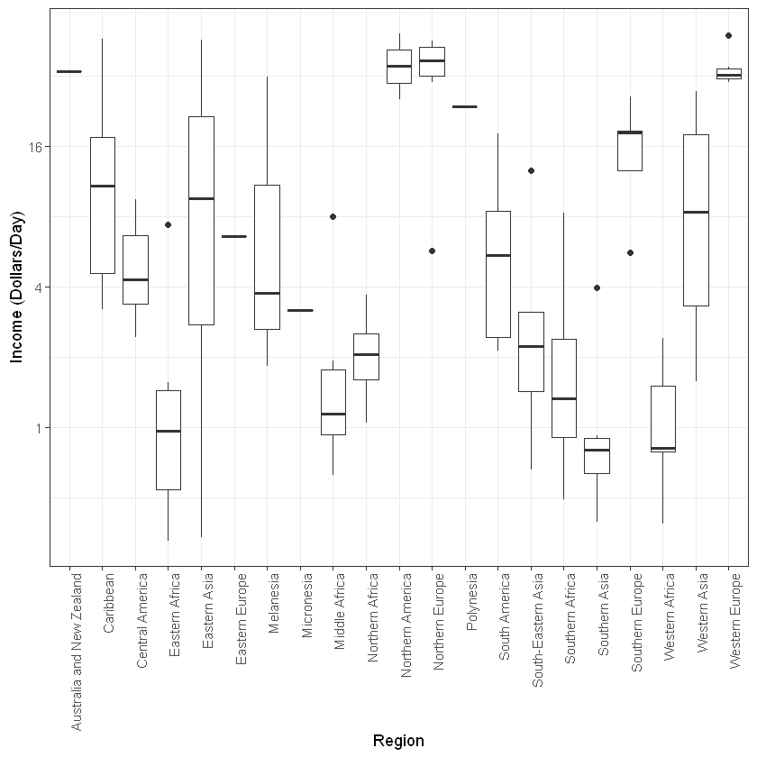
# Reorder and Color Regions for better comparisongapminder %>%filter(year == past_year &!is.na(gdp)) %>%# Reorder region by median incomemutate(region =reorder(region, dollars_per_day, FUN = median)) %>%ggplot(aes(region, dollars_per_day, fill = continent)) +geom_boxplot() +scale_y_continuous(trans ="log2") +theme(axis.text.x =element_text(angle =90, hjust =1)) +geom_point(show.legend =FALSE) +ylab("Income (Dollars/Day)") +xlab("Region")
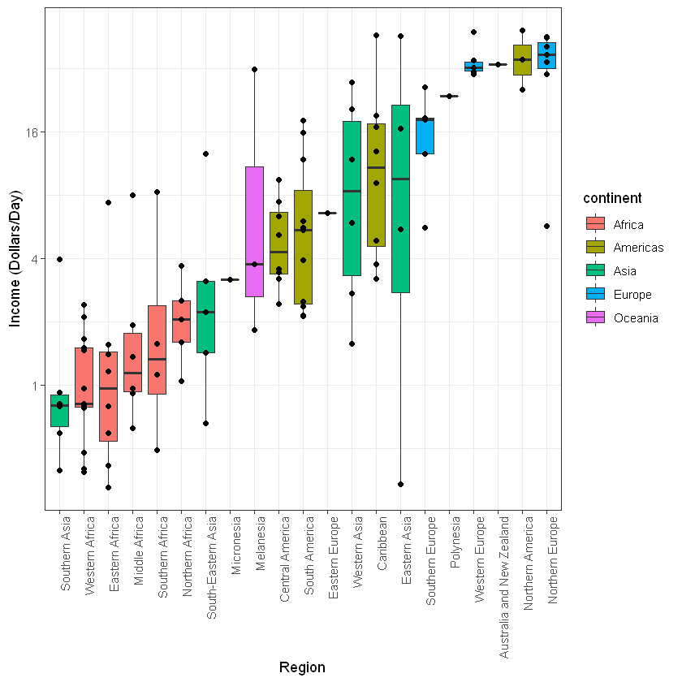
# add dollars per day variable and define past yeargapminder <- gapminder %>%mutate(dollars_per_day = gdp/population/365)past_year <-1970# define Western countrieswest <-c("Western Europe", "Northern Europe", "Southern Europe", "Northern America", "Australia and New Zealand")# facet by West vs devlopinggapminder %>%filter(year == past_year &!is.na(gdp)) %>%mutate(group =ifelse(region %in% west, "West", "Developing")) %>%ggplot(aes(dollars_per_day)) +geom_histogram(binwidth =1, color ="black") +scale_x_continuous(trans ="log2") +facet_grid(. ~ group)# facet by West/developing and yearpresent_year <-2010gapminder %>%filter(year %in%c(past_year, present_year) &!is.na(gdp)) %>%mutate(group =ifelse(region %in% west, "West", "Developing")) %>%ggplot(aes(dollars_per_day)) +geom_histogram(binwidth =1, color ="black") +scale_x_continuous(trans ="log2") +facet_grid(year ~ group)
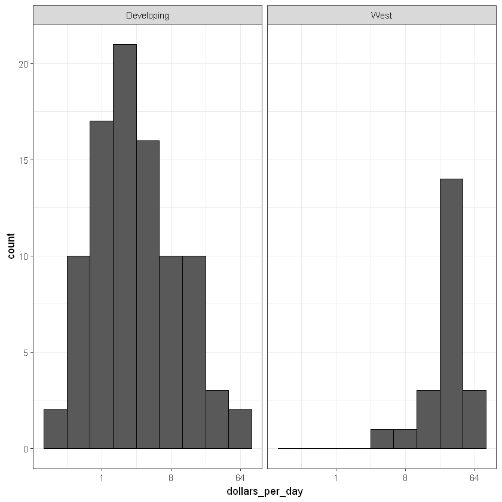
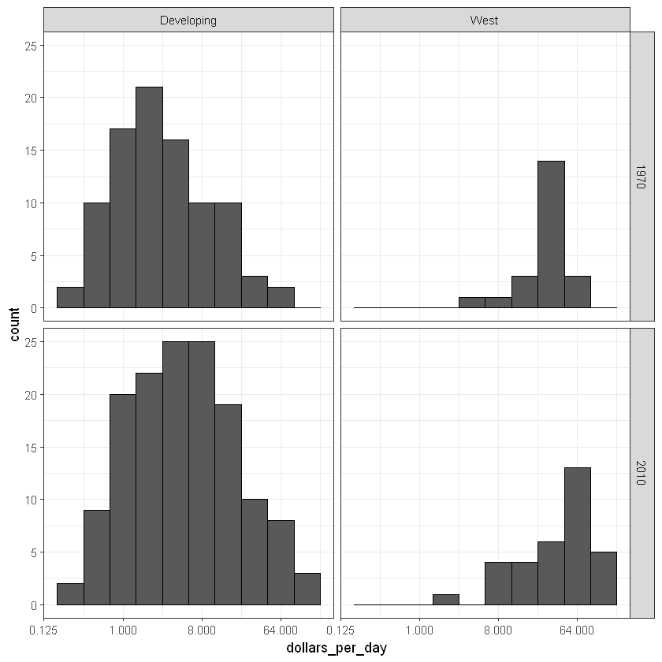
# define countries that have data available in both yearscountry_list_1 <- gapminder %>%filter(year == past_year &!is.na(dollars_per_day)) %>% .$country country_list_2 <- gapminder %>%filter(year == present_year &!is.na(dollars_per_day)) %>% .$country country_list <-intersect(country_list_1, country_list_2)# make histogram including only countries with data available in both yearsgapminder %>%filter(year %in%c(past_year, present_year) & country %in% country_list) %>%# keep only selected countriesmutate(group =ifelse(region %in% west, "West", "Developing")) %>%ggplot(aes(dollars_per_day)) +geom_histogram(binwidth =1, color ="black") +scale_x_continuous(trans ="log2") +facet_grid(year ~ group)
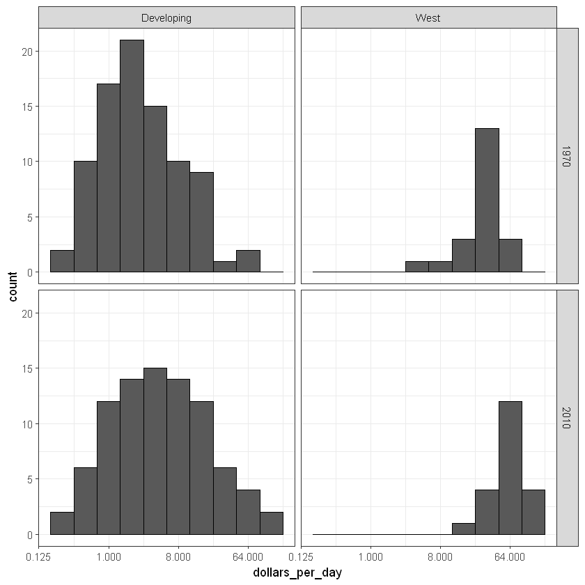
p <- gapminder %>%filter(year %in%c(past_year, present_year) & country %in% country_list) %>%mutate(region =reorder(region, dollars_per_day, FUN = median)) %>%ggplot() +theme(axis.text.x =element_text(angle =90, hjust =1)) +xlab("") +scale_y_continuous(trans ="log2") p +geom_boxplot(aes(region, dollars_per_day, fill = continent)) +facet_grid(year ~ .)# arrange matching boxplots next to each other, colored by year p +geom_boxplot(aes(region, dollars_per_day, fill =factor(year)))
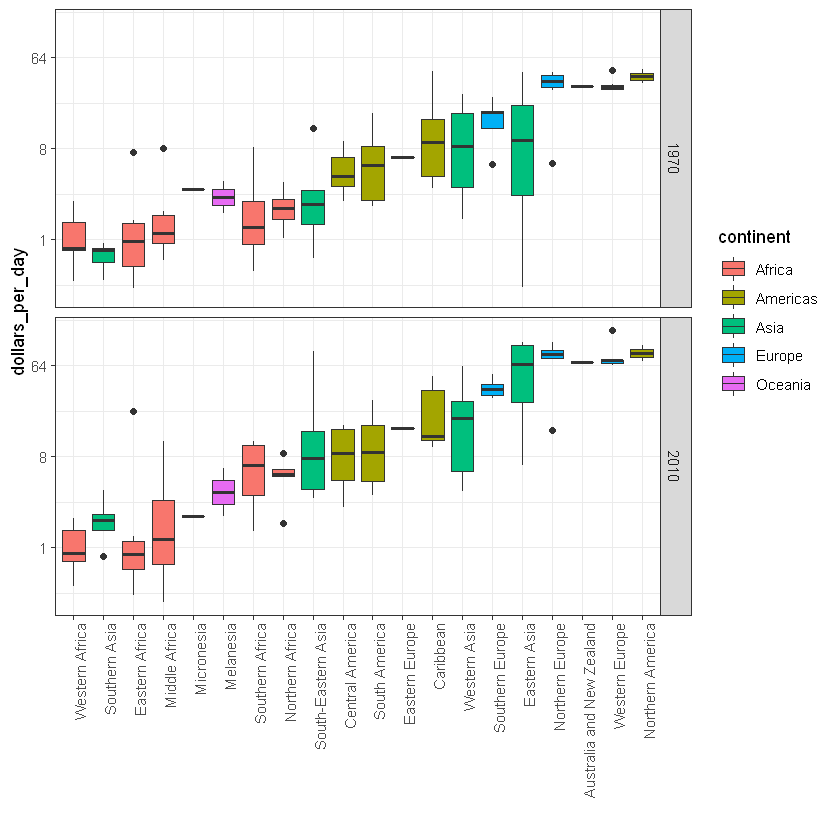
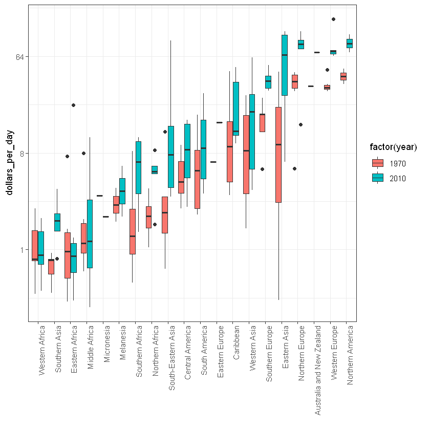
west <-c("Western Europe", "Northern Europe", "Southern Europe", "Northern America", "Australia and New Zealand")dat <- gapminder %>%filter(year %in%c(2010, 2015) & region %in% west &!is.na(life_expectancy) & population >10^7)dat %>%mutate(location =ifelse(year ==2010, 1, 2),location =ifelse(year ==2015& country %in%c("United Kingdom", "Portugal"), location +0.22, location),hjust =ifelse(year ==2010, 1, 0)) %>%mutate(year =as.factor(year)) %>%ggplot(aes(year, life_expectancy, group = country)) +geom_line(aes(color = country), show.legend =FALSE) +geom_text(aes(x = location, label = country, hjust = hjust), show.legend =FALSE) +xlab("") +ylab("Life Expectancy") +ggtitle("Change in Life Expectancy") +theme_gdocs()
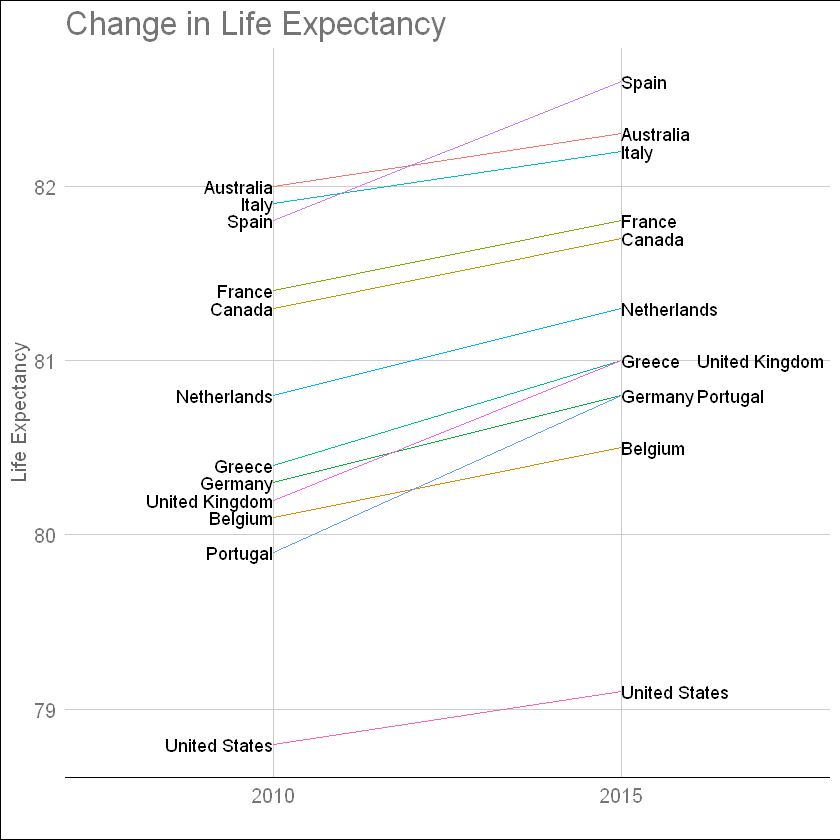
dat %>%mutate(year =paste0("life_expectancy_", year)) %>%select(country, year, life_expectancy) %>%spread(year, life_expectancy) %>%mutate(average = (life_expectancy_2015 + life_expectancy_2010)/2,difference = life_expectancy_2015 - life_expectancy_2010) %>%ggplot(aes(average, difference, label = country)) +geom_point(color ="red") +geom_text_repel() +geom_abline(lty =2) +xlab("Average of 2010 and 2015") +ylab("Difference between 2015 and 2010")
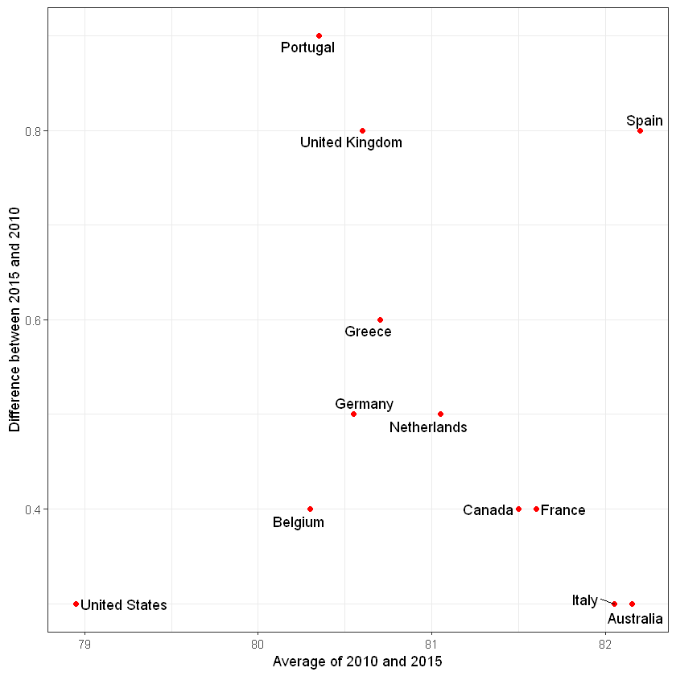
# see the code below the previous video for variable definitions# smooth density plots - area under each curve adds to 1gapminder %>%filter(year == past_year & country %in% country_list) %>%mutate(group =ifelse(region %in% west, "West", "Developing")) %>%group_by(group) %>%summarize(n =n()) %>% knitr::kable()# smooth density plots - variable counts on y-axisp <- gapminder %>%filter(year == past_year & country %in% country_list) %>%mutate(group =ifelse(region %in% west, "West", "Developing")) %>%ggplot(aes(dollars_per_day, y = ..count.., fill = group)) +scale_x_continuous(trans ="log2")p +geom_density(alpha =0.2, bw =0.75) +facet_grid(year ~ .)
# note you must redefine p with the new gapminder object firstp <- gapminder %>%filter(year %in%c(past_year, present_year) & country %in% country_list) %>%ggplot(aes(dollars_per_day, fill = group)) +scale_x_continuous(trans ="log2")# stacked density plotp +geom_density(alpha =0.2, bw =0.75, position ="stack") +facet_grid(year ~ .)
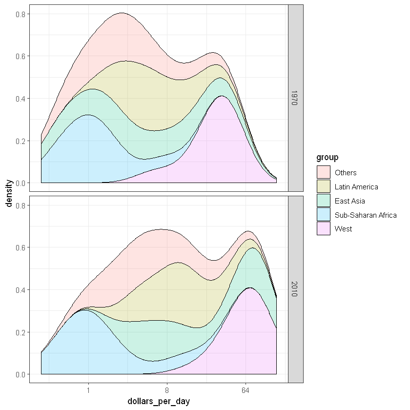
# weighted stacked density plotgapminder %>%filter(year %in%c(past_year, present_year) & country %in% country_list) %>%group_by(year) %>%mutate(weight = population/sum(population*2)) %>%ungroup() %>%ggplot(aes(dollars_per_day, fill = group, weight = weight)) +scale_x_continuous(trans ="log2") +geom_density(alpha =0.2, bw =0.75, position ="stack") +facet_grid(year ~ .)
Warning message in density.default(x, weights = w, bw = bw, adjust = adjust, kernel = kernel, :
"sum(weights) != 1 -- will not get true density"Warning message in density.default(x, weights = w, bw = bw, adjust = adjust, kernel = kernel, :
"sum(weights) != 1 -- will not get true density"Warning message in density.default(x, weights = w, bw = bw, adjust = adjust, kernel = kernel, :
"sum(weights) != 1 -- will not get true density"Warning message in density.default(x, weights = w, bw = bw, adjust = adjust, kernel = kernel, :
"sum(weights) != 1 -- will not get true density"Warning message in density.default(x, weights = w, bw = bw, adjust = adjust, kernel = kernel, :
"sum(weights) != 1 -- will not get true density"Warning message in density.default(x, weights = w, bw = bw, adjust = adjust, kernel = kernel, :
"sum(weights) != 1 -- will not get true density"Warning message in density.default(x, weights = w, bw = bw, adjust = adjust, kernel = kernel, :
"sum(weights) != 1 -- will not get true density"Warning message in density.default(x, weights = w, bw = bw, adjust = adjust, kernel = kernel, :
"sum(weights) != 1 -- will not get true density"Warning message in density.default(x, weights = w, bw = bw, adjust = adjust, kernel = kernel, :
"sum(weights) != 1 -- will not get true density"Warning message in density.default(x, weights = w, bw = bw, adjust = adjust, kernel = kernel, :
"sum(weights) != 1 -- will not get true density"
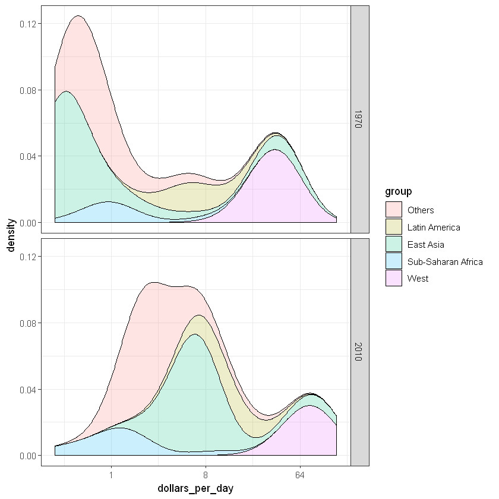
The plot clearly shows how an improvement in life expectancy followed the drops in fertility rates. In 1960, Germans lived 15 years longer than South Koreans, although by 2010 the gap is completely closed. It exemplifies the improvement that many non-western countries have achieved in the last 40 years.